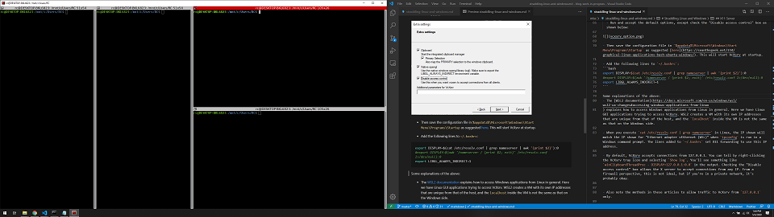

Straddling Windows and Linux

Here's a view of my favorite terminal emulator, terminator, running under WSL2 with X11 forwarding, side-by-side with VSCode running in Windows. (The screenshot is from a 49" widescreen monitor.) In this note, I've outlined my setup to get to this.
I've always had one foot in the Windows world and another in Linux.
The companies I've worked for have all required the use of a Windows PC even when my primary role was embedded development under Linux, which I accessed through VirtualBox. I've also had to write applications under Windows for distribution to colleagues or customers who didn't use Linux. Hence straddling the two operating systems has been the norm for me.
At home, my main PC is Windows. I have a similar setup as at work with VirtualBox for Linux. While I've migrated away from dependence on Windows-specific applications for most things, to leverage the NVIDIA GPUs in my personal TensorFlow-based machine learning projects, Windows seems to be the only option for now. Plus having a setup that somewhat parallels my work setup simplifies my mental context switching between work and home.
Moving to WSL2 from VirtualBox
I've been itching to experiment with Windows Subsystem for Linux (WSL) for a while but didn't want to spend the time on it until it was more stable. With the availability of the new WSL2, it was time to take a look again. Ultimately, my goal is to switch completely away from VirtualBox, and use Docker for Windows together with WSL2 running a Linux OS. But I can't afford to lose access to my VirtualBox-based Linux environment during the transition period.
Installing WSL2
I signed up for the Windows Insider Program (which is required to get WSL2 until it is officially released), installed WSL2, and added Ubuntu 18.04 under WSL2.
After installation, the WSL version and Linux distribution can be determined using:
wsl -l -v
NAME STATE VERSION
* Ubuntu-18.04 Running 2
I want to note down a couple of keys steps here as these can be used to select the WSL version and Linux distribution:
wsl --set-version Ubuntu-18.04 2
wsl --set-default-version 2
Switching between WSL2 and VirtualBox
This article mentioned that VirtualBox 6 had experimental support for Hyper-V, and that it could coexist with WSL2 and Docker for Windows. With the following settings for a given VirtualBox VM, the article mentioned that the VM could be run with Hyper-V enabled:
-
Select Settings, System, Acceleration tab, and select Hyper‑V as the Paravirtualization Interface.
-
Uncheck the box for Disable I/O APC on the Motherboard tab. Also, set the number of processors to 1 under the Processor tab to be compatible with the above setting.
-
Run:
VBoxManage setextradata "<VM Name>" "VBoxInternal/NEM/UseRing0Runloop" 0
Unfortunately, the above settings didn't work for me. Hence I switch between WSL2 and VirtualBox by modifying Windows boot configuration with bcdedit:
- Disable Hyper-V by executing the following in an Administrator command prompt, reboot, and then run VirtualBox. WSL2 won't work with this setting.
bcdedit /set hypervisorlaunchtype off
- Enable Hyper-V by executing the following in an Administrator command prompt, reboot, and then run WSL2. VirtualBox won't work with this setting.
bcdedit /set hypervisorlaunchtype auto
While not ideal, I can still get access to my VirtualBox VMs with a reboot when necessary. Maybe VirtualBox will eventually work with Hyper-V enabled...
VSCode
Similar to other Windows applications integrated with WSL such as explorer.exe, you can start VSCode directly from a wsl terminal without an X11 Server by typing code.
You'll also want to install the VSCode Remote - WSL extension. With this extension, VSCode running in Windows can access the Linux toolchains and utilities installed in the Linux distribution under WSL2. I'm not a fan of running the toolchains from within VSCode as the interface for switching between editing and the terminal is not that great. But it's still nice to have.
X11 Server
To run Linux GUI applications, you'll need an X11 server.
-
Download VcXsrv. This seems to be a good choice for an X11 server as its actively maintained and open source.
-
To save a default configuration, run and accept the default options, except check the "Disable access control" box as shown below:
-
Then save the configuration file in
%appdata%\Microsoft\Windows\Start Menu\Programs\Startupas suggested here. This will start VcXsrv at startup. Also notable is the solution here but I didn't seem to need any setting forLIBGL_ALWAYS_INDIRECTto getterminatorworking with VcXsrv under WSL2. -
Add the following line to the end of
~/.bashrcas suggested here to add the Windows host's IP for X11 forwarding.
export DISPLAY=$(cat /etc/resolv.conf | grep nameserver | awk '{print $2}'):0.0
- From the Windows Control Panel, find "Windows Defender Firewall", select "Allow an app through Windows Firewall". You may have to allow VcXsrv to accept connections from both Private and Public networks as shown below for X11 forwarding to work.
Some notes on the above:
-
The WSL2 documentation explains how to access Windows applications from Linux in general. Here we have Linux GUI applications trying to access VcXsrv. WSL2 creates a VM with its own IP addresses that are unique from that of the Windows host. The
localhostinside the VM is independent of thelocalhoston the Windows side. Hence the default X11 server setting oflocalhostor127.0.0.1will not work. -
When you execute
cat /etc/resolv.conf | grep nameserverin Linux, the IP shown will match the IP shown for "Ethernet adapter vEthernet (WSL)" whenipconfigis run in a Windows command prompt. The line added to~/.bashrcsets X11 forwarding to automatically determine and use this IP address. -
By default, VcXsrv accepts connections from 127.0.0.1. You can tell by right-clicking the VcXsrv tray icon and selecting
Show log. You'll see something likewinClipboardThreadProc - DISPLAY=127.0.0.1:0.0in the output. Checking the "Disable access control" box during VcXsrv configuration allows the X11 server to accept connections from any IP. From a firewall perspective, this is not ideal. More info on configuring a narrower firewall rule is available here, but I haven't tried it yet.
terminator
terminator is my favorite terminal emulator in Linux (and I like it better than anything I know of under Windows). Wish it had been ported to Python 3. Unfortunately, Python 2 gets installed when terminator is installed.
- Install
terminatoranddbus-x11:
sudo apt update
sudo apt install terminator
sudo apt install dbus-x11
Without dbus-x11, terminator fails with some error associated with dbus.exceptions.DBusException. This provided the hint about installing dbus-x11 and it solved the issue. Without installing dbus-x11, you could still run terminator but need to use the -u option as mentioned here.
Finishing Touches
To start terminator, I just want to double-click an icon on my desktop. Here's my setup:
- Create a Windows batch file named
terminator.batwith the following content:
python start_terminator.py
- In the same folder as
terminator.bat, addstart_terminator.pywith the following content. You'll need Python 3.6 or later installed on Windows:
import subprocess
ipconfig = subprocess.check_output(['ipconfig']).decode()
state = 'unknown'
ipv4 = ''
for line in ipconfig.splitlines():
if '(WSL)' in line:
state = 'WSL'
if state == 'WSL':
if 'IPv4' in line:
ipv4 = line.split()[-1]
break
subprocess.run(f'start /min wsl -- cd ; DISPLAY={ipv4}:0.0 terminator', shell=True)
-
Explanation: The Python script determines the IP address of the Ethernet adapter for the WSL2 VM by running
ipconfigin Windows and parsing the text output. Note that this IP address seems to be different at each power up. The last line of the script then spawns the subprocess that starts WSL2 and invokesterminator. The pesky command prompt window starts up minimized when usingstart /minhence avoiding any additional distracting windows that need to be manually minimized. -
Create a shortcut to the
terminator.bat, rename it asterminatorand place it on the Windows desktop. You can customize the icon for it. I picked this icon from here. The result on my desktop looks like:
Double-clicking the desktop icon for terminator will launch it under WSL2.
Note that there seems to be some latency for starting up terminator, especially after the PC reboots. It seems to take a couple of minutes perhaps before the WSL2 VM and X11 server are running and able to communicate.
Useful References
Good references that I may not have mentioned in my notes above are listed below:
Comments
Comments powered by Disqus